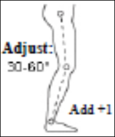
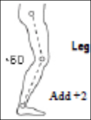
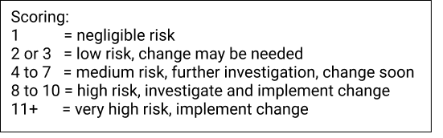

<div class="main-content">
    <mat-card>
        <mat-card-header>
            <div class="container text-center" style="padding-right: 20%;">
                <div class="row" style="margin-bottom: -2%;">
                    <div class="col-3" style="margin-top: 6px;">
                        <h1><b>REBA Calculator</b></h1>
                    </div>
                    <div class="col-9 align-self-end">
                        <div class="container">
                            <div class="row justify-content-end">
                                <div class="col-3"></div>
                                <div class="col-9" style="margin-right: -25%;">
                                    <a (click)="newCalculation()" class="button">
                                        <h2>New Calculation</h2>
                                    </a>
                                    <a (click)="newCalculationwLogin()" class="button">
                                        <h2>Login</h2>
                                    </a>
                                    <button class="transparent-button" (click)="rebaHelpButton()" style="margin-left: 10%;"><i class="bi bi-question-circle" style="font-size: 27px;"></i></button>
                                </div>
                            </div>
                        </div>
                    </div>
                </div>
                <div class="row justify-content-start">
                    <div class="col-3" style="margin-left: -3%;">
                        
                    </div>
                    <div class="col-8" style="margin-left: 4%;">
                        <div *ngIf="!videoSrc">
                            <h3>Upload a video for make a REBA Calculation</h3>
                            <div class="input-group mb-3">
                                <input type="file" class="form-control" (change)="handleFileInput($event)" accept="video/*">
                              </div>
                            <h3>You can<button (click)="defaultVideo()" class="btn btn-link">use default video</button>of our system or simply make a calculation without a video, too.</h3>
                        </div>
                        <div *ngIf="videoSrc">
                        <video width="500px;" height="300px;" controls>
                            <source [src]="videoSrc" type="video/mp4">
                        </video>
                    </div>
                    </div>
                </div>
            </div>
        </mat-card-header>
        <mat-card-content>
            <div *ngIf="count == 1">
                <div class="container" style="margin-top: 1%;">
                    <div class="row">
                        <div class="col-xl-7">
                            <h2 id="neck">Neck Analysis</h2>
                            <mat-radio-group aria-labelledby="neck" [(ngModel)]="neckSelected">
                                <mat-radio-button *ngFor="let neck of neckOptions" [value]="neck.value"
                                    style="margin-right:10px;"></mat-radio-button>
                            </mat-radio-group>
                            <br><br>
                            <mat-checkbox [(ngModel)]="neckCheckbox1">If neck is twisted</mat-checkbox>
                            <br>
                            <mat-checkbox [(ngModel)]="neckCheckbox2">If neck is side bending</mat-checkbox>
                            <br><br>
                            <h2 id="trunk">Trunk Analysis</h2>
                            <mat-radio-group aria-labelledby="trunk" [(ngModel)]="trunkSelected">
                                <mat-radio-button *ngFor="let trunk of trunkOptions" [value]="trunk.value"
                                    style="margin-right:10px;"></mat-radio-button>
                            </mat-radio-group>
                            <br><br>
                            <mat-checkbox [(ngModel)]="trunkCheckbox1">If trunk is twisted</mat-checkbox>
                            <br>
                            <mat-checkbox [(ngModel)]="trunkCheckbox2">If trunk is side bending</mat-checkbox>
                        </div>
                        <div class="col-xl-5">
                            <h2 id="leg">Leg Analysis</h2>
                            <mat-radio-group aria-labelledby="leg" [(ngModel)]="legSelected">
                                <mat-radio-button *ngFor="let leg of legOptions" [value]="leg.value"
                                    style="margin-right:8px;"></mat-radio-button>
                            </mat-radio-group>
                            <mat-checkbox [(ngModel)]="legCheckbox1" style="margin-right:12px; margin-left: 10px;"></mat-checkbox>
                            <mat-checkbox [(ngModel)]="legCheckbox2" style="margin-left: 12px;"></mat-checkbox>
                            <br><br>
                            <h2 style="margin-bottom: -2%;">Add Force/Load Score</h2>
                            <mat-radio-group [(ngModel)]="tableAOption">
                                <mat-radio-button *ngFor="let tableA of tableAOptions"
                                    style="margin-right:40%; margin-top: 4%;"
                                    [value]="tableA.value">{{tableA.name}}</mat-radio-button>
                            </mat-radio-group>
                            <br><br>
                            <mat-checkbox [(ngModel)]="shockOrRapid">If shock or rapid build up of force</mat-checkbox>
                        </div>
                    </div>
                </div>
            </div>
            <div *ngIf="count == 2">
                <div class="container" style="margin-top: 1%;">
                    <div class="row">
                        <div class="col-xl-7">
                            <h2 id="upperarm">Upper Arm Analysis</h2>
                            <mat-radio-group aria-labelledby="upperarm" [(ngModel)]="upperArmSelected">
                                <mat-radio-button *ngFor="let upperarm of upperArmOptions" [value]="upperarm.value"
                                    style="margin-right:10px;"></mat-radio-button>
                            </mat-radio-group>
                            <br><br>
                            <mat-checkbox [(ngModel)]="upperArmCheckbox1" style="margin-top:2px;">If shoulder is
                                raised</mat-checkbox>
                            <br>
                            <mat-checkbox [(ngModel)]="upperArmCheckbox2" style="margin-top:4px;">If upper arm is
                                abducted</mat-checkbox>
                            <br>
                            <mat-checkbox [(ngModel)]="upperArmCheckbox3" style="margin-top:4px;">If arm is supported or
                                person is leaning</mat-checkbox>
                            <br><br>
                            <h2 id="lowerarm">Lower Arm Analysis</h2>
                            <mat-radio-group aria-labelledby="lowerarm" [(ngModel)]="lowerArmSelected">
                                <mat-radio-button *ngFor="let lowerarm of lowerArmOptions" [value]="lowerarm.value"
                                    style="margin-right:10px;"></mat-radio-button>
                            </mat-radio-group>
                        </div>
                        <div class="col-xl-5" style="padding-left: 60px;">
                            <h2 id="wrist">Wrist Analysis</h2>
                            <mat-radio-group aria-labelledby="wrist" [(ngModel)]="wristSelected">
                                <mat-radio-button *ngFor="let wrist of wristOptions" [value]="wrist.value"
                                    style="margin-right:10px;"></mat-radio-button>
                            </mat-radio-group>
                            <br><br>
                            <mat-checkbox [(ngModel)]="wristCheckbox">If wrist is bent from midline or
                                twisted</mat-checkbox>
                            <br><br><br>
                            <h2 id="coupling-score">Coupling Score</h2>
                            <mat-radio-group aria-labelledby="coupling-score" [(ngModel)]="tableBOption">
                                <mat-radio-button *ngFor="let tableB of tableBOptions" style="margin-bottom:8px;"
                                    [value]="tableB.value">{{tableB.name}}</mat-radio-button>
                            </mat-radio-group>
                        </div>
                    </div>
                </div>
            </div>
            <div *ngIf="count == 3">
                <div class="container" style="margin-top: 1%;">
                    <div class="row">
                        <div class="col-6">
                            <h2>Activity Score</h2>
                            <mat-checkbox [(ngModel)]="tableCCheckbox1">1 or more body parts are held for longer
                                than 1 minute (static)</mat-checkbox>
                            <br><br>
                            <mat-checkbox [(ngModel)]="tableCCheckbox2">Repeated small range actions (more than 4x per
                                minute)</mat-checkbox>
                            <br><br>
                            <mat-checkbox [(ngModel)]="tableCCheckbox3">Action causes rapid large range
                                changes in postures or unstable base</mat-checkbox>
                            <br><br>
                            <button type="button" class="btn btn-primary" (click)="calculateTableC()">Click For
                                Calculate REBA Score</button>
                        </div>
                        <div class="col-6">
                            <div *ngIf="calculateClicked">
                            <h2>Your final REBA Score is: {{rebaScore}}</h2>
                            <h2>{{riskMessage}}</h2>
                            </div>
                            
                        </div>
                    </div>
                </div>
            </div>
            <br>
            <div class="container">
                <div class="row justify-content-end">
                    <div class="col-9"></div>
                    <div class="col-2">
                        <div class="container">
                            <div class="row justify-content-end">
                                <div class="col-4">
                                    <div *ngIf="count == 2">
                                        <button (click)="goBackToTheFirstPage()"
                                            style="width:60px; height: 30px; margin-top: 6px; display: flex; justify-content: center; align-items: center;"
                                            type="button" class="btn btn-outline-dark"><i
                                                class="bi bi-arrow-left"></i></button>
                                    </div>
                                    <div *ngIf="count == 3">
                                        <button (click)="goBackToTheSecondPage()"
                                            style="width:60px; height: 30px; margin-top: 6px; display: flex; justify-content: center; align-items: center;"
                                            type="button" class="btn btn-outline-dark"><i
                                                class="bi bi-arrow-left"></i></button>
                                    </div>
                                </div>
                                <div class="col-4">
                                    <p style="font-size: large; margin-top: 10px; margin-left: 17px;">{{count}}/3</p>
                                </div>
                                <div class="col-4">
                                    <div *ngIf="count == 1">
                                        <button (click)="goToSecondPage()"
                                            style="width:60px; height: 30px; margin-top: 6px; display: flex; justify-content: center; align-items: center;"
                                            type="button" class="btn btn-outline-dark"><i
                                                class="bi bi-arrow-right"></i></button>
                                    </div>
                                    <div *ngIf="count == 2">
                                        <button (click)="goToThirdPage()"
                                            style="width:60px; height: 30px; margin-top: 6px; display: flex; justify-content: center; align-items: center;"
                                            type="button" class="btn btn-outline-dark"><i
                                                class="bi bi-arrow-right"></i></button>
                                    </div>
                                </div>
                            </div>
                        </div>
                    </div>
                </div>
            </div>
        </mat-card-content>
    </mat-card>
</div>